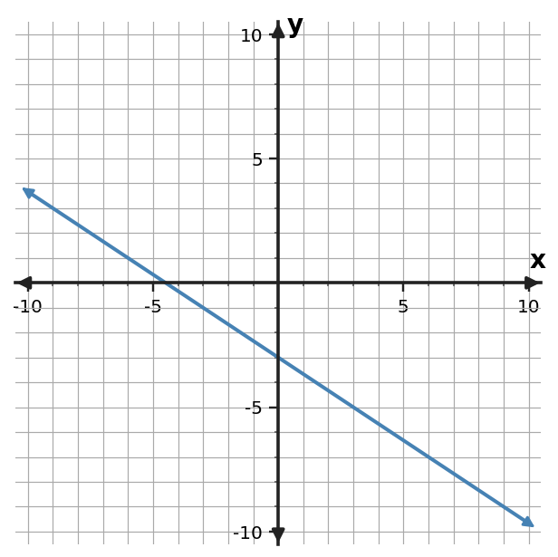
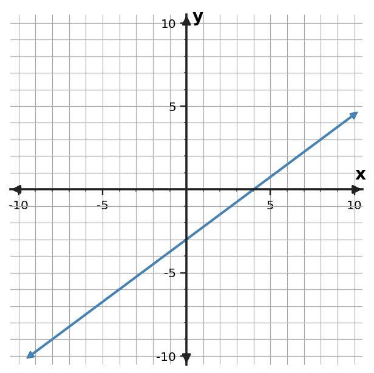
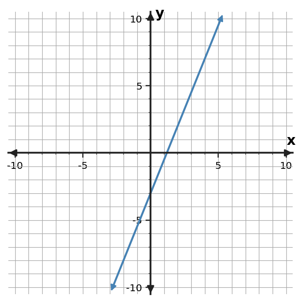

1. Write a linear equation in slope-intercept form for the line through $(-2,-5)$ and $(4,-2)$.
1. Write a linear equation in slope-intercept form for the line through $(-2,-5)$ and $(4,-2)$.
2. Write a linear equation in slope-intercept form for the line through $(1,-5)$ and $(5,-13)$.
3. Write a linear equation in slope-intercept form for the line through $(0,1)$ and $(2,9)$.
4. Write an equation in slope-intercept form for the relationship in the table.
| $x$ | $y$ |
|---|---|
| $-2$ | $-2$ |
| $0$ | $-1$ |
| $2$ | $0$ |
| $4$ | $1$ |
5. Write an equation in slope-intercept form for the relationship in the table.
| $x$ | $y$ |
|---|---|
| $-2$ | $-4$ |
| $0$ | $-6$ |
| $2$ | $-8$ |
| $4$ | $-10$ |
6. Write an equation in slope-intercept form for the relationship in the table.
| $x$ | $y$ |
|---|---|
| $-2$ | $-11$ |
| $0$ | $-3$ |
| $2$ | $5$ |
| $4$ | $13$ |
7. Write an equation in slope-intercept form for the graphed line. Use graph features as evidence.

8. Write an equation in slope-intercept form for the graphed line. Use graph features as evidence.

9. Write an equation in slope-intercept form for the graphed line. Use graph features as evidence.

10. A rental charges 18 dollars up front plus 5 dollars per hour. Let $h$ be hours and $C$ be total cost. Write $C$ as a function of $h$. Identify the hourly charge and initial charge.
11. A candle starts at 30 cm and shortens 2 cm each hour. Let $h$ be hours and $H$ be height. Write $H$ as a function of $h$. Identify the hourly change and initial height.
12. A student has 35 dollars and saves 4 dollars each week. Let $w$ be weeks and $S$ be savings. Write $S$ as a function of $w$. Identify the weekly change and starting savings.
13. For $y=x-6$, explain the roles of $m$ and $b$. Then give one ordered pair that must lie on the line.
14. For $y=-3x+4$, explain the roles of $m$ and $b$. Then give one ordered pair that must lie on the line.
15. For $y=2x+11$, explain the roles of $m$ and $b$. Then give one ordered pair that must lie on the line.
16. A linear relationship is represented by $y=2x-7$. Write a different equation that is equivalent to it after moving all terms to one side, and verify that $(4,1)$ satisfies both forms.
17. A linear relationship is represented by $y=-x-2$. Write a different equation that is equivalent to it after moving all terms to one side, and verify that $(3,-5)$ satisfies both forms.
18. A linear relationship is represented by $y=5x+1$. Write a different equation that is equivalent to it after moving all terms to one side, and verify that $(2,11)$ satisfies both forms.
19. Rewrite $4(x-3)$ as an equivalent expression, then verify equivalence at $x=-1$.
20. Rewrite $-3(x-2)$ as an equivalent expression, then verify equivalence at $x=2$.
21. Rewrite $2(x+7)$ as an equivalent expression, then verify equivalence at $x=-2$.
22. Write a linear equation for the table and state the slope and starting value.
| $x$ | $y$ |
|---|---|
| $0$ | $-5$ |
| $2$ | $-4$ |
| $4$ | $-3$ |
23. Write a linear equation for the table and state the slope and starting value.
| $x$ | $y$ |
|---|---|
| $0$ | $-3$ |
| $2$ | $-5$ |
| $4$ | $-7$ |
24. Write a linear equation for the table and state the slope and starting value.
| $x$ | $y$ |
|---|---|
| $0$ | $-8$ |
| $2$ | $-4$ |
| $4$ | $0$ |